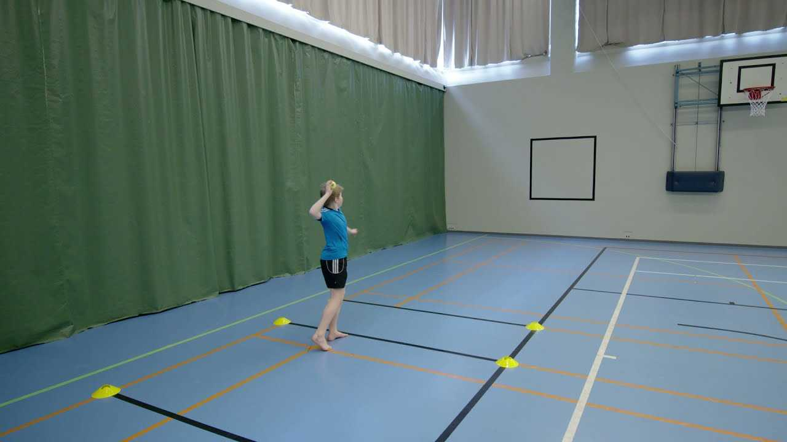

<html lang="en">

</html>

<head>
  <title>Move</title>
  <meta charset="UTF-8">
  <meta name="viewport" content="width=device-width, initial-scale=1.0">
  <link href="https://cdn.jsdelivr.net/npm/bootstrap@5.3.3/dist/css/bootstrap.min.css" rel="stylesheet">
  <script src="https://cdn.jsdelivr.net/npm/bootstrap@5.3.3/dist/js/bootstrap.bundle.min.js"></script>
  <link href="styles.css" rel="stylesheet">
</head>

<body id="Move-sivu">
  <!-- Navipalkki -->
  <header>
    <nav class="navbar navbar-expand-sm navbar-dark navbar-custom fixed-top">
      <div class="container-fluid">
        <a class="navbar-brand" href="index.html">
          
        </a>
        <button class="navbar-toggler custom-toggler" type="button" data-bs-toggle="collapse"
          data-bs-target="#collapsibleNavbar">
          <span class="navbar-toggler-icon"></span>
        </button>
        <div class="collapse navbar-collapse" id="collapsibleNavbar">
          <ul class="navbar-nav">
            <li class="nav-item">
              <a class="nav-link" href="index.html">Etusivu</a>
            </li>
            <li class="nav-item"></li>
            <a class="nav-link" href="liikuntaohjelma.html">Liikuntaohjelma</a>
            </li>
            <li class="nav-item">
              <a class="nav-link" href="liikuntalaksyt.html">Liikuntaläksyt</a>
            </li>
            <li class="nav-item dropdown">
              <a class="nav-link dropdown-toggle" href="#" role="button" data-bs-toggle="dropdown">Move</a>
              <ul class="dropdown-menu">
                <li><a class="dropdown-item" href="move.html#valmistautuminen">Valmistautuminen</a></li>
                <li><a class="dropdown-item" href="move.html#testien-sisalto">Testit</a></li>
                <li><a class="dropdown-item" href="move.html#tulokset">Tulokset</a></li>
                <li><a class="dropdown-item" href="move.html#testipaivat">Testipäivät</a></li>
              </ul>
            </li>
          </ul>
        </div>
      </div>
    </nav>
  </header>

  <!-- Kysymykset ja vastaukset -->

  <main id="Move-alku" class="container-fluid">

    <div id="Move-johdanto">
      <div class="row">
        <div class="col-md-4"></div>
        <div class="col-md-4 text-center">
          <h1 style="color: #373E3B;">Movetestit</h1>
          <p>Movetestit kuuluvat 8lk. liikunnanohjelmaan. Ne tehdään liikutatunnilla. Movetesteihin kuuluu testejä
            kestävyydestä, liikkuvuudesta sekä voimasta.</p>
        </div>
        <div class="col-md-4">
        </div>
      </div>

      <!-- Valmistautuminen -->
      <section id="move-kysymykset" class="sisalto-osio" style="padding-top: 30px;">
        <h2 id="Valmistautuminen" style="color: #fff;  background-color: #92B2A2; padding-top: 10px;">Miten valmistudun?
        </h2>
        <p>MOVE-mittaukset ovat fyysisen kunnon mittauksia, joita käytetään erityisesti lasten ja nuorten fyysisen
          toimintakyvyn arviointiin. Jotta suoriutuisit näistä mittauksista parhaalla mahdollisella tavalla, on tärkeää
          valmistautua huolellisesti.
        <h5>Lepo ja palautuminen</h3>
          <p>Hyvä yöuni: Varmista, että nukut hyvin ennen mittauspäivää. Riittävä uni auttaa kehoa palautumaan ja
            parantaa suoritusta.</p>
          <p>Vältä raskasta liikuntaa edeltävänä päivänä: Jotta kehosi on parhaassa mahdollisessa kunnossa
            mittauspäivänä, vältä liian rasittavaa liikuntaa edeltävinä päivinä.</p>
          <h5>Sopiva vaatetus</h3>
            <p>Mukavat ja joustavat vaatteet: Valitse urheiluvaatteet, joissa on helppo liikkua. Varmista, että vaatteet
              ovat hengittäviä ja joustavia, jotta ne eivät rajoita liikkeitäsi mittausten aikana.</p>
            <p>Hyvät kengät: Valitse urheilukengät, jotka tukevat jalkoja ja ovat mukavat jalassa. Tämä auttaa sinua
              suoriutumaan mittauksista, jotka vaativat juoksemista tai muuta fyysistä toimintaa.</p>
            </p>
      </section>

      <!-- Testit -->

      <section id="move-kysymykset" class="sisalto-osio">
        <h2 id="testien-sisalto" style="color: #fff;  background-color: #92B2A2; padding-top: 10px;">Mitä testejä
          Move-mittaukset sisältävät?</h2>
        <p>
          MOVE-mittaukset ovat osa Suomen kouluissa käytettävää fyysisen toimintakyvyn arviointia, ja ne on suunniteltu
          mittaamaan lasten ja nuorten fyysisen kunnon eri osa-alueita. Mittaukset sisältävät useita testejä, jotka
          arvioivat muun muassa lihaskuntoa, kestävyyttä, liikkuvuutta ja motoriikkaa. MOVE-testit on suunniteltu
          erityisesti peruskoululaisille ja ne suoritetaan yleensä 5. ja 8. luokilla.</p>
        <h5>20 metrin viivajuoksu</h5>
        <ul>
          <li>Tämä testi mittaa kestävyyskuntoa. Oppilas juoksee 20 metrin matkaa edestakaisin äänimerkkien mukaan,
            jotka nopeutuvat vähitellen. Testi päättyy, kun oppilas ei enää pysy äänimerkkien tahdissa.</li>
          <li>Tarkoitus: Mittaa sydän- ja verenkiertoelimistön kuntoa ja hapenottokykyä.</li>
        </ul>
        <h5>Vauhditon 5-loikka (alavartalon lihasvoima ja räjähtävyys)</h5>
        <ul>
          <li>Tässä testissä oppilas suorittaa viisi loikkaa peräkkäin paikaltaan pyrkien saavuttamaan mahdollisimman
            pitkän yhteismatkan.</li>
          <li>Tarkoitus: Mittaa alaraajojen voimaa ja räjähtävyyttä.</li>
        </ul>
        <h5>Toistopunnerrus (ylävartalon lihaskunto)</h5>
        <ul>
          <li>Oppilas tekee punnerruksia 20 sekunnin ajan ja pyrkii suorittamaan mahdollisimman monta toistoa.
            Punnerruksia voidaan tehdä joko suorin jaloin tai polvet maassa, riippuen oppilaan kyvystä.</li>
          <li>Tarkoitus: Mittaa ylävartalon ja käsivarsien lihasvoimaa sekä lihaskestävyyttä.</li>
        </ul>

      </section>

      <!-- Tulokset -->

      <section id="move-kysymykset" class="sisalto-osio">
        <h2 id="tulokset" style="color: #fff;  background-color: #92B2A2; padding-top: 10px;">Miten tulkitsen tuloksia?
        </h2>
        <p>
          MOVE-mittaukset tarjoavat arvokasta tietoa fyysisestä kunnostasi ja voivat auttaa sinua parantamaan
          liikuntakykyäsi. Tässä on ohjeita siitä, miten voit käyttää tuloksia hyväksi:</p>
        <h5>Tarkastele Tuloksiasi</h5>
        <ul>
          <li>Yksilöllinen arviointi: Katso huolellisesti, miten suoriuduit eri testeissä. Mieti, mitkä osa-alueet
            sujuivat hyvin ja missä voisit parantaa.</li>
          <li><a href="https://www.oph.fi/fi/koulutus-ja-tutkinnot/move-palaute-oppilaalle">Tarkastele tuloksiasi
              Move-palautteen avulla</a></li>
        </ul>
        <h5>Keskustele Tuloksista</h5>
        <ul>
          <li>Keskustelu opettajan kanssa: Käy tuloksesi läpi opettajan kanssa ja keskustele siitä, mitä ne
            tarkoittavat. Opettaja voi antaa sinulle vinkkejä ja neuvoja parantamiseen.</li>
          <li>Vanhempien mukaan ottaminen: Kerro tuloksistasi myös vanhemmillesi, jotta he voivat tukea sinua liikunnan
            ja harjoittelun kanssa kotona.</li>
        </ul>
        <h5>Laadi Kehittämissuunnitelma</h5>
        <ul>
          <li>Harjoitusohjelma: Laadi itsellesi henkilökohtainen harjoitusohjelma, joka keskittyy niihin osa-alueisiin,
            joissa tarvitset parannusta. Esimerkiksi, jos kestävyyskunnossasi on parantamisen varaa, voit lisätä
            kestävyysliikuntaa ohjelmaasi.</li>
          <li>Osallistuminen kursseille: Hyödynnä koulun tarjoamia liikuntakursseja tai -kerhoja, jotka voivat auttaa
            sinua kehittämään taitojasi ja kuntoasi.</li>
        </ul>
      </section>

      <!-- Testipäivät -->

      <section id="move-kysymykset" class="sisalto-osio">
        <h2 id="testipaivat" style="color: #fff;  background-color: #92B2A2; padding-top: 10px;">Milloin teemme
          Move-testit?</h2>
        <p>
          MOVE-mittaukset tehdään yhdellä kerralla viikolla 36. Tarkista vielä listasta luokkasi Move-päivä.</p>
        <h5>Move-mittaukset syksy 2024</h5>
        <ul>
          <li>8A: ti 10.9.</li>
          <li>8B: ke 11.9.</li>
          <li>8C: to 12.9.</li>
          <li>8D: ma 9.9.</li>
        </ul>
      </section>

  </main>
</body>

</html>